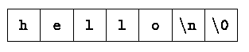

Back to Introduction -- Index -- Chapter 2
This approach and its drawbacks. Most notable is that the complete story on any particular feature is not found here, and the tutorial, by being brief, may also be misleading. And because the examples do not use the full power of C, they are not as concise and elegant as they might be. We have tried to minimize these effects, but be warned. Another drawback is that later chapters will necessarily repeat some of this chapter. We hope that the repetition will help you more than it annoys.
In any case, experienced programmers should be able to extrapolate(推断) from the material in this chapter to their own programming needs. Beginners should supplement it by writing small, similar programs of their own. Both groups can use it as a framework on which to hang the more detailed descriptions that begin in Chapter 2.
This is a big hurdle; to leap over it you have to be able to create the program text somewhere, compile it successfully, load it, run it, and find out where your output went. With these mechanical details mastered, everything else is comparatively easy.
In C, the program to print ``hello, world'' is
#include <stdio.h>
int main(void)
{
printf("hello, world\n");
return 0;
}
Just how to run this program depends on the system you are using. As a
specific example, on the UNIX operating system you must create the program
in a file whose name ends in ``.c'', such as hello.c, then
compile it with the command
$ cc hello.c or $ gcc hello.c or $ <whatever C> hello.cIf you haven't botched anything, such as omitting a character or misspelling something, the compilation will proceed silently, and make an executable file called a.out. If you run a.out by typing the command
$ ./a.outit will print
hello, worldOn other systems, the rules will be different; check with a local expert. On Windows, assume we use Microsoft Visual C++.
C:\> cl hello.c
C:\> helloit will print the same words. As a professional programmer, we should master the command lines.
Now, for some explanations about the program itself. A C program, whatever its size, consists of functions and variables. A function contains statements that specify the computing operations to be done, and variables store values used during the computation. C functions are like the subroutines and functions in Fortran or the procedures and functions of Pascal. Our example is a function named main. Normally you are at liberty to give functions whatever names you like, but ``main'' is special - your program begins executing at the beginning of main. This means that every program must have a main somewhere.
int main(void)
int main(int argc, char *argv[]);
See also: void main()? (是不是有点像：回字有四种写法？)
The return code of main() and the return code of a process. Under Linux:
$ ./a.out
Print out the return code of the latest process ./a.out
$ echo $?
Under Windows:
C:\> a.exe
C:\> echo %errorlevel%
The return code of main is useful. Here is an example:
$ cat Makefile
all: test
test: ./a.out
If a.out returns zero, then ``make test'' will run quietly without no errors at all. If a.out returns a value other than zero, ``make test'' will output error messages.
main will usually call other functions to help perform its job, some that you wrote, and others from libraries that are provided for you. The first line of the program,
#include <stdio.h>tells the compiler to include information about the standard input/output library; the line appears at the beginning of many C source files. The standard library is described in Chapter 7 and Appendix B.
One method of communicating data between functions is for the calling function to provide a list of values, called arguments, to the function it calls. The parentheses after the function name surround the argument list. In this example, main is defined to be a function that expects no arguments, which is indicated by the empty list ( ).
#include <stdio.h> include information about standard library
int main(void) define a function called main that received no argument values { statements of main are enclosed in braces printf("hello, world\n"); main calls library function printf return 0; to print this sequence of characters } \n represents the newline character
The first C program
The statements of a function are enclosed in braces { }. The function main contains only two statements,
printf("hello, world\n");
return 0;
A function is called by naming it, followed by a parenthesized list of
arguments, so this calls the function printf with the argument
"hello, world\n". printf is a library function that prints
output, in this case the string of characters between the quotes.
A sequence of characters in double quotes, like "hello, world\n", is called a character string or string constant. For the moment our only use of character strings will be as arguments for printf and other functions.
The sequence \n in the string is C notation for the newline character, which when printed advances the output to the left margin on the next line. If you leave out the \n (a worthwhile experiment), you will find that there is no line advance after the output is printed. You must use \n to include a newline character in the printf argument; if you try something like
printf("hello, world
");
the C compiler will produce an error message.
printf never supplies a newline character automatically, so several calls may be used to build up an output line in stages. Our first program could just as well have been written
#include <stdio.h>
int main(void)
{
printf("hello, ");
printf("world");
printf("\n");
return 0;
}
to produce identical output.
Notice that \n represents only a single character. An escape sequence like \n provides a general and extensible mechanism for representing hard-to-type or invisible characters. Among the others that C provides are \t for tab, \b for backspace, \" for the double quote and \\ for the backslash itself. There is a complete list in Section 2.3.
Exercise 1-1. Run the ``hello, world'' program on your system. Experiment with leaving out parts of the program, to see what error messages you get.
Exercise 1-2. Experiment to find out what happens when prints's argument string contains \c, where c is some character not listed above.
1 -17 20 -6 40 4 60 15 80 26 100 37 120 48 140 60 160 71 180 82 200 93 220 104 240 115 260 126 280 137 300 148The program itself still consists of the definition of a single function named main. It is longer than the one that printed ``hello, world'', but not complicated. It introduces several new ideas, including comments, declarations, variables, arithmetic expressions, loops, and formatted output.
#include <stdio.h>
/* Print Fahrenheit-Celsius table
* for fahr = 0, 20, ..., 300
*/
int main(void)
{
int fahr, celsius;
int lower, upper, step;
lower = 0; /* lower limit of temperature scale */
upper = 300; /* upper limit */
step = 20; /* step size */
fahr = lower;
while (fahr <= upper) {
celsius = 5 * (fahr - 32) / 9;
printf("%d\t%d\n", fahr, celsius);
fahr += step;
}
return 0;
}
The three lines
/* Print Fahrenheit-Celsius table * for fahr = 0, 20, ..., 300 */are a comment, which in this case explains briefly what the program does. Any characters between /* and */ are ignored by the compiler; they may be used freely to make a program easier to understand. Comments may appear anywhere where a blank, tab or newline can. C does not allow nested comments like: /* /* */ */. Although some compilers support it, please avoid using it in practice. If you like, you can use
#if 0
#endif /* 0 */
instead to comment out a block of lines. C does not support single line comments,
either(although some new standards or compilers do support it). Avoid using it
in our source code, too.
// avoid using this kind of comments in C programs.
In C, all variables must be declared before they are used, usually at the beginning of the function before any executable statements. A declaration announces the properties of variables; it consists of a name and a list of variables, such as
int fahr, celsius;
int lower, upper, step;
The type int means that the variables listed are integers; by contrast
with float, which means floating point, i.e., numbers that may have a
fractional part. The range of both int and float depends on the
machine you are using; 16-bits ints, which lie between -32768 and
+32767, are common, as are 32-bit ints. A float number is
typically a 32-bit quantity, with at least six significant digits and
magnitude generally between about 10-38 and 1038.
C provides several other data types besides int and float, including:
| char | character - a single byte |
| short | short integer |
| long | long integer |
| double | double-precision floating point |
The size of these objects is also machine-dependent. There are also arrays, structures and unions of these basic types, pointers to them, and functions that return them, all of which we will meet in due course.
Computation in the temperature conversion program begins with the assignment statements
lower = 0;
upper = 300;
step = 20;
which set the variables to their initial values. Individual statements are
terminated by semicolons.
Each line of the table is computed the same way, so we use a loop that repeats once per output line; this is the purpose of the while loop
while (fahr <= upper) {
...
}
The while loop operates as follows: The condition in parentheses is
tested. If it is true (fahr is less than or equal to upper), the
body of the loop (the three statements enclosed in braces) is executed. Then
the condition is re-tested, and if true, the body is executed again. When the
test becomes false (fahr exceeds upper) the loop ends, and
execution continues at the statement that follows the loop. There are no
further statements in this program, so it terminates.
The body of a while can be one or more statements enclosed in braces, as in the temperature converter, or a single statement without braces, as in
while (i < j)
i *= 2;
In either case, we will always indent the statements controlled by the
while by one tab stop (which we have shown as four spaces) so you can see at
a glance which statements are inside the loop. The indentation emphasizes the
logical structure of the program. Although C compilers do not care about how
a program looks, proper indentation and spacing are critical in making
programs easy for people to read. We recommend writing only one statement per
line, and using blanks around operators to clarify grouping. The position of
braces is less important, although people hold passionate beliefs. We have
chosen one of several popular styles. Pick a style that suits you, then use
it consistently.
Most of the work gets done in the body of the loop. The Celsius temperature is computed and assigned to the variable celsius by the statement
celsius = 5 * (fahr - 32) / 9;
The reason for multiplying by 5 and dividing by 9 instead of just multiplying
by 5/9 is that in C, as in many other languages, integer division
truncates: any fractional part is discarded. Since 5 and
9 are integers. 5/9 would be truncated to zero and so all
the Celsius temperatures would be reported as zero.
This example also shows a bit more of how printf works. printf is a general-purpose output formatting function, which we will describe in detail in Chapter 7. Its first argument is a string of characters to be printed, with each % indicating where one of the other (second, third, ...) arguments is to be substituted, and in what form it is to be printed. For instance, %d specifies an integer argument, so the statement
printf("%d\t%d\n", fahr, celsius);
causes the values of the two integers fahr and celsius to be
printed, with a tab (\t) between them.
Each % construction in the first argument of printf is paired with the corresponding second argument, third argument, etc.; they must match up properly by number and type, or you will get wrong answers.
By the way, printf is not part of the C language; there is no input or output defined in C itself. printf is just a useful function from the standard library of functions that are normally accessible to C programs. The behaviour of printf is defined in the ANSI standard, however, so its properties should be the same with any compiler and library that conforms to the standard.
In order to concentrate on C itself, we don't talk much about input and output until chapter 7. In particular, we will defer formatted input until then. If you have to input numbers, read the discussion of the function scanf in Section 7.4. scanf is like printf, except that it reads input instead of writing output.
There are a couple of problems with the temperature conversion program. The simpler one is that the output isn't very pretty because the numbers are not right-justified. That's easy to fix; if we augment each %d in the printf statement with a width, the numbers printed will be right-justified in their fields. For instance, we might say
printf("%3d %6d\n", fahr, celsius);
to print the first number of each line in a field three digits wide, and the
second in a field six digits wide, like this:
0 -17
20 -6
40 4
60 15
80 26
100 37
...
The more serious problem is that because we have used integer arithmetic, the
Celsius temperatures are not very accurate; for instance, 0oF is
actually about -17.8oC, not -17. To get more accurate answers, we
should use floating-point arithmetic instead of integer. This requires some
changes in the program. Here is the second version:
#include <stdio.h>
/* Print Fahrenheit-Celsius table
* for fahr = 0, 20, ..., 300; floating-point version
*/
int main(void)
{
float fahr, celsius;
float lower, upper, step;
lower = 0; /* lower limit of temperatuire scale */
upper = 300; /* upper limit */
step = 20; /* step size */
fahr = lower;
while (fahr <= upper) {
celsius = (5.0 / 9.0) * (fahr - 32.0); /* !Try to remove ".0"s here, and compile and run it! */
printf("%3.0f %6.1f\n", fahr, celsius);
fahr += step;
}
return 0;
}
This is much the same as before, except that fahr and celsius
are declared to be float and the formula for conversion is written in a
more natural way. We were unable to use 5/9 in the previous version
because integer division would truncate it to zero. A decimal point in a
constant indicates that it is floating point, however, so 5.0/9.0 is
not truncated because it is the ratio of two floating-point values.
If an arithmetic operator has integer operands, an integer operation is performed. If an arithmetic operator has one floating-point operand and one integer operand, however, the integer will be converted to floating point before the operation is done. If we had written (fahr - 32), the 32 would be automatically converted to floating point. Nevertheless, writing floating-point constants with explicit decimal points even when they have integral values emphasizes their floating-point nature for human readers.
The detailed rules for when integers are converted to floating point are in Chapter 2. For now, notice that the assignment
fahr = lower;and the test
while (fahr <= upper)also work in the natural way - the int is converted to float before the operation is done.
The printf conversion specification %3.0f says that a floating-point number (here fahr) is to be printed at least three characters wide, with no decimal point and no fraction digits. %6.1f describes another number (celsius) that is to be printed at least six characters wide, with 1 digit after the decimal point. The output looks like this:
0 -17.8
20 -6.7
40 4.4
...
Width and precision may be omitted from a specification: %6f says that
the number is to be at least six characters wide; %.2f specifies two
characters after the decimal point, but the width is not constrained; and
%f merely says to print the number as floating point.| %d | print as decimal integer |
| %6d | print as decimal integer, at least 6 characters wide |
| %f | print as floating point |
| %6f | print as floating point, at least 6 characters wide |
| %.2f | print as floating point, 2 characters after decimal point |
| %6.2f | print as floating point, at least 6 wide and 2 after decimal point |
Among others, printf also recognizes %o for octal, %x for hexadecimal, %c for character, %s for character string and %% for itself.
Exercise 1-3. Modify the temperature conversion program to print a heading above the table.
Exercise 1-4. Write a program to print the corresponding Celsius to Fahrenheit table.
#include <stdio.h>
/* Print Fahrenheit-Celsius table */
int main(void)
{
int fahr;
for (fahr = 0; fahr <= 300; fahr += 20)
printf("%3d %6.1f\n", fahr, (5.0 / 9.0) * (fahr - 32));
return 0;
}
This produces the same answers, but it certainly looks different. One major
change is the elimination of most of the variables; only fahr remains,
and we have made it an int. The lower and upper limits and the step
size appear only as constants in the for statement, itself a new
construction, and the expression that computes the Celsius temperature now
appears as the third argument of printf instead of a separate
assignment statement.
This last change is an instance of a general rule - in any context where it is permissible to use the value of some type, you can use a more complicated expression of that type. Since the third argument of printf must be a floating-point value to match the %6.1f, any floating-point expression can occur here.
The for statement is a loop, a generalization of the while. If you compare it to the earlier while, its operation should be clear. Within the parentheses, there are three parts, separated by semicolons. The first part, the initialization
fahr = 0is done once, before the loop proper is entered. The second part is the test or condition that controls the loop:
fahr <= 300This condition is evaluated; if it is true, the body of the loop (here a single ptintf) is executed. Then the increment step
fahr += 20is executed, and the condition re-evaluated. The loop terminates if the condition has become false. As with the while, the body of the loop can be a single statement or a group of statements enclosed in braces. The initialization, condition and increment can be any expressions.
The choice between while and for is arbitrary, based on which seems clearer. The for is usually appropriate for loops in which the initialization and increment are single statements and logically related, since it is more compact than while and it keeps the loop control statements together in one place.
Exercise 1-5. Modify the temperature conversion program to print the table in reverse order, that is, from 300 degrees to 0.
#define name replacement list
Thereafter, any occurrence of name (not in quotes and not part of another name) will be replaced by the corresponding replacement text. The name has the same form as a variable name: a sequence of letters and digits that begins with a letter. The replacement text can be any sequence of characters; it is not limited to numbers.
#include <stdio.h>
#define LOWER 0 /* lower limit of table */
#define UPPER 300 /* upper limit */
#define STEP 20 /* step size */
/* Print Fahrenheit-Celsius table */
int main(void)
{
int fahr;
for (fahr = LOWER; fahr <= UPPER; fahr += STEP)
printf("%3d %6.1f\n", fahr, (5.0 / 9.0) * (fahr - 32));
return 0;
}
The quantities LOWER, UPPER and STEP are symbolic constants, not variables, so they do not appear in declarations. Symbolic constant names are conventionally written in upper case so they can ber readily distinguished from lower case variable names. Notice that there is no semicolon at the end of a #define line.
Exercise 1-A: #define a macro max(x, y) to return the max value of x and y.
The model of input and output supported by the standard library is very simple. Text input or output, regardless of where it originates or where it goes to, is dealt with as streams of characters. A text stream is a sequence of characters divided into lines; each line consists of zero or more characters followed by a newline character. It is the responsibility of the library to make each input or output stream confirm this model; the C programmer using the library need not worry about how lines are represented outside the program.
The standard library provides several functions for reading or writing one character at a time, of which getchar and putchar are the simplest. Each time it is called, getchar reads the next input character from a text stream and returns that as its value. That is, after
c = getchar();the variable c contains the next character of input. The characters normally come from the keyboard; input from files is discussed in Chapter 7.
The function putchar prints a character each time it is called:
putchar(c);prints the contents of the integer variable c as a character, usually on the screen. Calls to putchar and printf may be interleaved; the output will appear in the order in which the calls are made.
read a character
while (charater is not end-of-file indicator)
output the character just read
read a character
Converting this into C gives:
#include <stdio.h>
/* copy input to output; 1st version */
int main(void)
{
int c;
c = getchar();
while (c != EOF) {
putchar(c);
c = getchar();
}
return 0;
}
The relational operator != means ``not equal to''.
What appears to be a character on the keyboard or screen is of course, like everything else, stored internally just as a bit pattern. The type char is specifically meant for storing such character data, but any integer type can be used. We used int for a subtle but important reason.
The problem is distinguishing the end of input from valid data. The solution is that getchar returns a distinctive value when there is no more input, a value that cannot be confused with any real character. This value is called EOF, for ``end of file''. We must declare c to be a type big enough to hold any value that getchar returns. We can't use char since c must be big enough to hold EOF in addition to any possible char. Therefore we use int.
EOF is an integer defined in <stdio.h>, but the specific numeric value doesn't matter as long as it is not the same as any char value. By using the symbolic constant, we are assured that nothing in the program depends on the specific numeric value.
The program for copying would be written more concisely by experienced C programmers. In C, any assignment, such as
c = getchar();is an expression and has a value, which is the value of the left hand side after the assignment. This means that a assignment can appear as part of a larger expression. If the assignment of a character to c is put inside the test part of a while loop, the copy program can be written this way:
#include <stdio.h>
/* copy input to output; 2nd version */
int main(void)
{
int c;
while ((c = getchar()) != EOF)
putchar(c);
return 0;
}
The while gets a character, assigns it to c, and then tests
whether the character was the end-of-file signal. If it was not, the body of
the while is executed, printing the character. The while then
repeats. When the end of the input is finally reached, the while
terminates and so does main.
This version centralizes the input - there is now only one reference to getchar - and shrinks the program. The resulting program is more compact, and, once the idiom is mastered, easier to read. You'll see this style often. (It's possible to get carried away and create impenetrable code, however, a tendency that we will try to curb.)
The parentheses around the assignment, within the condition are necessary. The precedence of != is higher than that of =, which means that in the absence of parentheses the relational test != would be done before the assignment =. So the statement
c = getchar() != EOFis equivalent to
c = (getchar() != EOF)This has the undesired effect of setting c to 0 or 1, depending on whether or not the call of getchar returned end of file. (More on this in Chapter 2.)
Exercsise 1-6. Verify that the expression getchar() != EOF is 0 or 1.
Exercise 1-7. Write a program to print the value of EOF.
#include <stdio.h>
/* count characters in input; 1st version */
int main(void)
{
long nc;
nc = 0;
while (getchar() != EOF)
++nc;
printf("%ld\n", nc);
return 0;
}
The statement
++nc;presents a new operator, ++, which means increment by one. You could instead write nc = nc + 1 but ++nc is more concise and often more efficient. There is a corresponding operator -- to decrement by 1. The operators ++ and -- can be either prefix operators (++nc) or postfix operators (nc++); these two forms have different values in expressions, as will be shown in Chapter 2, but ++nc and nc++ both increment nc. For the moment we will will stick to the prefix form.
The character counting program accumulates its count in a long variable instead of an int. long integers are at least 32 bits. Although on some machines, int and long are the same size, on others an int is 16 bits, with a maximum value of 32767, and it would take relatively little input to overflow an int counter. The conversion specification %ld tells printf that the corresponding argument is a long integer.
It may be possible to cope with even bigger numbers by using a double (double precision float). We will also use a for statement instead of a while, to illustrate another way to write the loop.
#include <stdio.h>
/* count characters in input; 2nd version */
int main(void)
{
double nc;
for (nc = 0; gechar() != EOF; ++nc)
;
printf("%.0f\n", nc);
return 0;
}
printf uses %f for both float and double;
%.0f suppresses the printing of the decimal point and the fraction
part, which is zero.
The body of this for loop is empty, because all the work is done in the test and increment parts. But the grammatical rules of C require that a for statement have a body. The isolated semicolon, called a null statement, is there to satisfy that requirement. We put it on a separate line to make it visible.
Before we leave the character counting program, observe that if the input contains no characters, the while or for test fails on the very first call to getchar, and the program produces zero, the right answer. This is important. One of the nice things about while and for is that they test at the top of the loop, before proceeding with the body. If there is nothing to do, nothing is done, even if that means never going through the loop body. Programs should act intelligently when given zero-length input. The while and for statements help ensure that programs do reasonable things with boundary conditions.
#include <stdio.h>
/* count lines in input */
int main(void)
{
int c, nl;
nl = 0;
while ((c = getchar()) != EOF)
{
if (c == '\n')
++nl;
}
printf("%d\n", nl);
return 0;
}
The body of the while now consists of an if, which in turn
controls the increment ++nl. The if statement tests the
parenthesized condition, and if the condition is true, executes the statement
(or group of statements in braces) that follows. We have again indented to
show what is controlled by what.
The double equals sign == is the C notation for ``is equal to'' (like Pascal's single = or Fortran's .EQ.). This symbol is used to distinguish the equality test from the single = that C uses for assignment. A word of caution: newcomers to C occasionally write = when they mean ==. As we will see in Chapter 2, the result is usually a legal expression, so you will get no warning.
A character written between single quotes represents an integer value equal to the numerical value of the character in the machine's character set. This is called a character constant, although it is just another way to write a small integer. So, for example, 'A' is a character constant; in the ASCII character set its value is 65, the internal representation of the character A. Of course, 'A' is to be preferred over 65: its meaning is obvious, and it is independent of a particular character set.
The escape sequences used in string constants are also legal in character constants, so '\n' stands for the value of the newline character, which is 10 in ASCII. You should note carefully that '\n' is a single character, and in expressions is just an integer; on the other hand, '\n' is a string constant that happens to contain only one character. The topic of strings versus characters is discussed further in Chapter 2.
Exercise 1-8. Write a program to count blanks, tabs, and newlines.
*Exercise 1-9. Write a program to copy its input to its output, replacing each string of one or more blanks by a single blank.
Exercise 1-10. Write a program to copy its input to its output, replacing each tab by \t, each backspace by \b, and each backslash by \\. This makes tabs and backspaces visible in an unambiguous way.
#include <stdio.h>
#define IN 1 /* inside a word */
#define OUT 0 /* outside a word */
/* count lines, words, and characters in input */
int main(void)
{
int c, nl, nw, nc, state;
state = OUT;
nl = nw = nc = 0;
while ((c = getchar()) != EOF) {
++nc;
if (c == '\n')
++nl;
if (c == ' ' || c == '\n' || c = '\t')
state = OUT;
else if (state == OUT) {
state = IN;
++nw;
}
}
printf("%d %d %d\n", nl, nw, nc);
return 0;
}
Every time the program encounters the first character of a word, it counts
one more word. The variable state records whether the program is
currently in a word or not; initially it is ``not in a word'', which is
assigned the value OUT. We prefer the symbolic constants IN
and OUT to the literal values 1 and 0 because they make the program
more readable. In a program as tiny as this, it makes little difference, but
in larger programs, the increase in clarity is well worth the modest extra
effort to write it this way from the beginning. You'll also find that it's
easier to make extensive changes in programs where magic numbers appear only
as symbolic constants.
The line
nl = nw = nc = 0;sets all three variables to zero. This is not a special case, but a consequence of the fact that an assignment is an expression with the value and assignments associated from right to left. It's as if we had written
nl = (nw = (nc = 0));The operator || means OR, so the line
if (c == ' ' || c == '\n' || c = '\t')says ``if c is a blank or c is a newline or c is a tab''. (Recall that the escape sequence \t is a visible representation of the tab character.) There is a corresponding operator && for AND; its precedence is just higher than ||. Expressions connected by && or || are evaluated left to right, and it is guaranteed that evaluation will stop as soon as the truth or falsehood is known. If c is a blank, there is no need to test whether it is a newline or tab, so these tests are not made. This isn't particularly important here, but is significant in more complicated situations, as we will soon see.
The example also shows an else, which specifies an alternative action if the condition part of an if statement is false. The general form is
if (expression)
statement1
else
statement2
One and only one of the two statements associated with an if-else is
performed. If the expression is true, statement1 is
executed; if not, statement2 is executed. Each
statement can be a single statement or several in braces. In the
word count program, the one after the else is an if that
controls two statements in braces.
Exercise 1-11. How would you test the word count program? What kinds of input are most likely to uncover bugs if there are any?
Exercise 1-12. Write a program that prints its input one word per line.
Exercise 1-A. Write your own version of Linux command `wc'.
There are twelve categories of input, so it is convenient to use an array to hold the number of occurrences of each digit, rather than ten individual variables. Here is one version of the program:
#include <stdio.h>
/* count digits, white space, others */
int main(void)
{
int c, i, nwhite, nother;
int ndigit[10];
nwhite = nother = 0;
for (i = 0; i < 10; ++i)
ndigit[i] = 0;
while ((c = getchar()) != EOF)
{
if (c >= '0' && c <= '9')
++ndigit[c-'0'];
else if (c == ' ' || c == '\n' || c == '\t')
++nwhite;
else
++nother;
}
printf("digits =");
for (i = 0; i < 10; ++i)
printf(" %d", ndigit[i]);
printf(", white space = %d, other = %d\n",
nwhite, nother);
return 0;
}
The output of this program on itself is
digits = 9 3 0 0 0 0 0 0 0 1, white space = 123, other = 345The declaration
int ndigit[10];declares ndigit to be an array of 10 integers. Array subscripts always start at zero in C, so the elements are ndigit[0], ndigit[1], ..., ndigit[9]. This is reflected in the for loops that initialize and print the array.
A subscript can be any integer expression, which includes integer variables like i, and integer constants.
This particular program relies on the properties of the character representation of the digits. For example, the test
if (c >= '0' && c <= '9')determines whether the character in c is a digit. If it is, the numeric value of that digit is
c - '0'This works only if '0', '1', ..., '9' have consecutive increasing values. Fortunately, this is true for all character sets.
By definition, chars are just small integers, so char variables and constants are identical to ints in arithmetic expressions. This is natural and convenient; for example c-'0' is an integer expression with a value between 0 and 9 corresponding to the character '0' to '9' stored in c, and thus a valid subscript for the array ndigit.
The decision as to whether a character is a digit, white space, or something else is made with the sequence
if (c >= '0' && c <= '9')
++ndigit[c-'0'];
else if (c == ' ' || c == '\n' || c == '\t')
++nwhite;
else
++nother;
The pattern
if (condition1)
statement1
else if (condition2)
statement2
...
...
else
statementn
occurs frequently in programs as a way to express a multi-way decision. The
conditions are evaluated in order from the top until some
condition is satisfied; at that point the corresponding
statement part is executed, and the entire construction is finished.
(Any statement can be several statements enclosed in braces.) If
none of the conditions is satisfied, the statement after the final
else is executed if it is present. If the final else and
statement are omitted, as in the word count program, no action takes
place. There can be any number of
else if(condition)
statement
groups between the initial if and the final else.
As a matter of style, it is advisable to format this construction as we have shown; if each if were indented past the previous else, a long sequence of decisions would march off the right side of the page.
The switch statement, to be discussed in Chapter 4, provides another way to write a multi-way branch that is particulary suitable when the condition is whether some integer or character expression matches one of a set of constants. For contrast, we will present a switch version of this program in Section 3.4.
*Exercise 1-13. Write a program to print a histogram of the lengths of words in its input. It is easy to draw the histogram with the bars horizontal; a vertical orientation is more challenging.
Exercise 1-14. Write a program to print a histogram of the frequencies of different characters in its input.
So far we have used only functions like printf, getchar and putchar that have been provided for us; now it's time to write a few of our own. Since C has no exponentiation operator like the ** of Fortran, let us illustrate the mechanics of function definition by writing a function power(m,n) to raise an integer m to a positive integer power n. That is, the value of power(2,5) is 32. This function is not a practical exponentiation routine, since it handles only positive powers of small integers, but it's good enough for illustration.(The standard library contains a function pow(x,y) that computes xy.)
Here is the function power and a main program to exercise it, so you can see the whole structure at once.
#include <stdio.h>
static int power(int m, int n);
/* test power function */
int main(void)
{
int i;
for (i = 0; i < 10; ++i)
printf("%d %d %d\n", i, power(2, i), power(-3, i));
return 0;
}
/* power: raise base to n-th power; n >= 0 */
static int power(int base, int n)
{
int i, p;
p = 1;
for (i = 1; i <= n; ++i)
p = p * base;
return p;
}
A function definition has this form:
return-type function-name(parameter declarations, if any)
{
declarations
statements
}
Function definitions can appear in any order, and in one source file or
several, although no function can be split between files. If the source
program appears in several files, you may have to say more to compile and
load it than if it all appears in one, but that is an operating system
matter, not a language attribute. For the moment, we will assume that both
functions are in the same file, so whatever you have learned about running C
programs will still work.
The function power is called twice by main, in the line
printf("%d %d %d\n", i, power(2, i), power(-3, i));
Each call passes two arguments to power, which each time returns an
integer to be formatted and printed. In an expression, power(2,i) is an
integer just as 2 and i are. (Not all functions produce an
integer value; we will take this up in Chapter 4.)
The first line of power itself,
static int power(int base, int n);
declares the parameter types and names, and the type of the result that the
function returns. The names used by power for its parameters are local
to power, and are not visible to any other function: other routines
can use the same names without conflict. This is also true of the variables
i and p: the i in power is unrelated to
the i in main.
We will generally use parameter for a variable named in the parenthesized list in a function. The terms formal argument and actual argument are sometimes used for the same distinction.
The value that power computes is returned to main by the return: statement. Any expression may follow return:
return expression;A function need not return a value; a return statement with no expression causes control, but no useful value, to be returned to the caller, as does ``falling off the end'' of a function by reaching the terminating right brace. And the calling function can ignore a value returned by a function.
You may have noticed that there is a return statement at the end of main. Since main is a function like any other, it may return a value to its caller, which is in effect the environment in which the program was executed. Typically, a return value of zero implies normal termination; non-zero values signal unusual or erroneous termination conditions. In the interests of simplicity, we have omitted return statements from our main functions up to this point, but we will include them hereafter, as a reminder that programs should return status to their environment.
The declaration
static int power(int base, int n);
just before main says that power is a function that expects two
int arguments and returns an int. This declaration, which is
called a function prototype, has to agree with the definition and uses
of power. It is an error if the definition of a function or any uses of
it do not agree with its prototype.
parameter names need not agree. Indeed, parameter names are optional in a function prototype, so for the prototype we could have written
static int power(int, int);
Well-chosen names are good documentation however, so we will often use them.
A note of history: the biggest change between ANSI C and earlier versions is how functions are declared and defined. In the original definition of C, the power function would have been written like this:
/* power: raise base to n-th power; n >= 0 */
/* (old-style version) */
power(base, n)
int base, n;
{
int i, p;
p = 1;
for (i = 1; i <= n; ++i)
p = p * base;
return p;
}
The parameters are named between the parentheses, and their types are
declared before opening the left brace; undeclared parameters are taken as
int. (The body of the function is the same as before.)
The declaration of power at the beginning of the program would have looked like this:
int power();
No parameter list was permitted, so the compiler could not readily check that
power was being called correctly. Indeed, since by default power
would have been assumed to return an int, the entire declaration might
well have been omitted.
The new syntax of function prototypes makes it much easier for a compiler to
detect errors in the number of arguments or their types. The old style of
declaration and definition still works in ANSI C, at least for a transition
period, but we strongly recommend that you use the new form when you have a
compiler that supports it.
(本书是1988年出版的，200X年当然应该采用新的风格了。)
Exercise 1.15. Rewrite the temperature conversion program of Section 1.2 to use a function for conversion.
One aspect of C functions may be unfamiliar to programmers who are used to some other languages, particulary Fortran. In C, all function arguments are passed ``by value.'' This means that the called function is given the values of its arguments in temporary variables rather than the originals. This leads to some different properties than are seen with ``call by reference'' languages like Fortran or with var parameters in Pascal, in which the called routine has access to the original argument, not a local copy.
注意比较 Call by value and by reference 的区别。特别的，可以通过实现以下两个程序来理解 Call by value:
1. 交换两个整数的取值，例如：void swap(int a, int b) vs. void swap(int *a, int *b)
2. 修改一个指针指向的内存的值 vs 修改一个指针的值，例如：void adjust(char *p) vs. void adjust(char **p)
Call by value is an asset, however, not a liability. It usually leads to more compact programs with fewer extraneous variables, because parameters can be treated as conveniently initialized local variables in the called routine. For example, here is a version of power that makes use of this property.
/* power: raise base to n-th power; n >= 0; version 2 */
int power(int base, int n)
{
int p;
for (p = 1; n > 0; --n)
p = p * base;
return p;
}
The parameter n is used as a temporary variable, and is counted down (a
for loop that runs backwards) until it becomes zero; there is no longer
a need for the variable i. Whatever is done to n inside
power has no effect on the argument that power was originally called
with.
When necessary, it is possible to arrange for a function to modify a variable in a calling routine. The caller must provide the address of the variable to be set (technically a pointer to the variable), and the called function must declare the parameter to be a pointer and access the variable indirectly through it. We will cover pointers in Chapter 5.
The story is different for arrays. When the name of an array is used as an argument, the value passed to the function is the location or address of the beginning of the array - there is no copying of array elements. By subscripting this value, the function can access and alter any argument of the array. This is the topic of the next section.
while (there's another line)
if (it's longer than the previous longest)
(save it)
(save its length)
print longest line
This outline makes it clear that the program divides naturally into pieces.
One piece gets a new line, another saves it, and the rest controls the
process.
Since things divide so nicely, it would be well to write them that way too. Accordingly, let us first write a separate function getline to fetch the next line of input. We will try to make the function useful in other contexts. At the minimum, getline has to return a signal about possible end of file; a more useful design would be to return the length of the line, or zero if end of file is encountered. Zero is an acceptable end-of-file return because it is never a valid line length. Every text line has at least one character; even a line containing only a newline has length 1.
When we find a line that is longer than the previous longest line, it must be saved somewhere. This suggests a second function, copy, to copy the new line to a safe place.
Finally, we need a main program to control getline and copy. Here is the result.
#include <stdio.h>
#define MAXLINE 1000 /* maximum input line length */
int getline(char line[], int maxline);
void copy(char to[], char from[]);
/* print the longest input line */
int main(void)
{
int len; /* current line length */
int max; /* maximum length seen so far */
char line[MAXLINE]; /* current input line */
char longest[MAXLINE]; /* longest line saved here */
max = 0;
while ((len = getline(line, MAXLINE)) > 0)
if (len > max) {
max = len;
copy(longest, line);
}
if (max > 0) /* there was a line */
printf("%s", longest);
return 0;
}
/* getline: read a line into s, return length */
int getline(char s[],int lim)
{
int c, i;
for (i=0; i < lim-1 && (c=getchar())!=EOF && c!='\n'; ++i)
s[i] = c;
if (c == '\n') {
s[i] = c;
++i;
}
s[i] = '\0';
return i;
}
/* copy: copy 'from' into 'to'; assume to is big enough */
void copy(char to[], char from[])
{
int i;
i = 0;
while ((to[i] = from[i]) != '\0')
++i;
}
The functions getline and copy are declared at the
beginning of the program, which we assume is contained in one file.
main and getline communicate through a pair of arguments and a returned value. In getline, the arguments are declared by the line
int getline(char s[], int lim);which specifies that the first argument, s, is an array, and the second, lim, is an integer. The purpose of supplying the size of an array in a declaration is to set aside storage. The length of an array s is not necessary in getline since its size is set in main. getline uses return to send a value back to the caller, just as the function power did. This line also declares that getline returns an int; since int is the default return type, it could be omitted.
Some functions return a useful value; others, like copy, are used only for their effect and return no value. The return type of copy is void, which states explicitly that no value is returned.
getline puts the character '\0' (the null character, whose value is zero) at the end of the array it is creating, to mark the end of the string of characters. This conversion is also used by the C language: when a string constant like
"hello\n"appears in a C program, it is stored as an array of characters containing the characters in the string and terminated with a '\0' to mark the end.

The %s format specification in printf expects the corresponding argument to be a string represented in this form. copy also relies on the fact that its input argument is terminated with a '\0', and copies this character into the output.
It is worth mentioning in passing that even a program as small as this one presents some sticky design problems. For example, what should main do if it encounters a line which is bigger than its limit? getline works safely, in that it stops collecting when the array is full, even if no newline has been seen. By testing the length and the last character returned, main can determine whether the line was too long, and then cope as it wishes. In the interests of brevity, we have ignored this issue.
There is no way for a user of getline to know in advance how long an input line might be, so getline checks for overflow. On the other hand, the user of copy already knows (or can find out) how big the strings are, so we have chosen not to add error checking to it.
Exercise 1-16. Revise the main routine of the longest-line program so it will correctly print the length of arbitrary long input lines, and as much as possible of the text.
Exercise 1-17. Write a program to print all input lines that are longer than 80 characters.
Exercise 1-18. Write a program to remove trailing blanks and tabs from each line of input, and to delete entirely blank lines.
*Exercise 1-19. Write a function reverse(s) that reverses the character string s. Use it to write a program that reverses its input a line at a time.
Because automatic variables come and go with function invocation, they do not retain their values from one call to the next, and must be explicitly set upon each entry. If they are not set, they will contain garbage.
As an alternative to automatic variables, it is possible to define variables that are external to all functions, that is, variables that can be accessed by name by any function. (This mechanism is rather like Fortran COMMON or Pascal variables declared in the outermost block.) Because external variables are globally accessible, they can be used instead of argument lists to communicate data between functions. Furthermore, because external variables remain in existence permanently, rather than appearing and disappearing as functions are called and exited, they retain their values even after the functions that set them have returned.
An external variable must be defined, exactly once, outside of any function; this sets aside storage for it. The variable must also be declared in each function that wants to access it; this states the type of the variable. The declaration may be an explicit extern statement or may be implicit from context. To make the discussion concrete, let us rewrite the longest-line program with line, longest, and max as external variables. This requires changing the calls, declarations, and bodies of all three functions.
#include <stdio.h>
#define MAXLINE 1000 /* maximum input line size */
int max; /* maximum length seen so far */
char line[MAXLINE]; /* current input line */
char longest[MAXLINE]; /* longest line saved here */
int getline(void);
void copy(void);
/* print longest input line; specialized version */
int main(void)
{
int len;
extern int max;
extern char longest[];
max = 0;
while ((len = getline()) > 0)
if (len > max) {
max = len;
copy();
}
if (max > 0) /* there was a line */
printf("%s", longest);
return 0;
}
/* getline: specialized version */
int getline(void)
{
int c, i;
extern char line[];
for (i = 0; i < MAXLINE - 1
&& (c=getchar)) != EOF && c != '\n'; ++i)
line[i] = c;
if (c == '\n') {
line[i] = c;
++i;
}
line[i] = '\0';
return i;
}
/* copy: specialized version */
void copy(void)
{
int i;
extern char line[], longest[];
i = 0;
while ((longest[i] = line[i]) != '\0')
++i;
}
The external variables in main, getline and copy are
defined by the first lines of the example above, which state their type and
cause storage to be allocated for them. Syntactically, external definitions
are just like definitions of local variables, but since they occur outside of
functions, the variables are external. Before a function can use an external
variable, the name of the variable must be made known to the function; the
declaration is the same as before except for the added keyword extern.
In certain circumstances, the extern declaration can be omitted. If the definition of the external variable occurs in the source file before its use in a particular function, then there is no need for an extern declaration in the function. The extern declarations in main, getline and copy are thus redundant. In fact, common practice is to place definitions of all external variables at the beginning of the source file, and then omit all extern declarations.
If the program is in several source files, and a variable is defined in file1 and used in file2 and file3, then extern declarations are needed in file2 and file3 to connect the occurrences of the variable. The usual practice is to collect extern declarations of variables and functions in a separate file, historically called a header, that is included by #include at the front of each source file. The suffix .h is conventional for header names. The functions of the standard library, for example, are declared in headers like <stdio.h>. This topic is discussed at length in Chapter 4, and the library itself in Chapter 7 and Appendix B.
Since the specialized versions of getline and copy have no arguments, logic would suggest that their prototypes at the beginning of the file should be getline() and copy(). But for compatibility with older C programs the standard takes an empty list as an old-style declaration, and turns off all argument list checking; the word void must be used for an explicitly empty list. We will discuss this further in Chapter 4.
You should note that we are using the words definition and declaration carefully when we refer to external variables in this section.``Definition'' refers to the place where the variable is created or assigned storage; ``declaration'' refers to places where the nature of the variable is stated but no storage is allocated.
By the way, there is a tendency to make everything in sight an extern variable because it appears to simplify communications - argument lists are short and variables are always there when you want them. But external variables are always there even when you don't want them. Relying too heavily on external variables is fraught with peril since it leads to programs whose data connections are not all obvious - variables can be changed in unexpected and even inadvertent ways, and the program is hard to modify. The second version of the longest-line program is inferior to the first, partly for these reasons, and partly because it destroys the generality of two useful functions by writing into them the names of the variables they manipulate.
At this point we have covered what might be called the conventional core of C. With this handful of building blocks, it's possible to write useful programs of considerable size, and it would probably be a good idea if you paused long enough to do so. These exercises suggest programs of somewhat greater complexity than the ones earlier in this chapter.
*Exercise 1-20. Write a program detab that replaces tabs in the input with the proper number of blanks to space to the next tab stop. Assume a fixed set of tab stops, say every n columns. Should n be a variable or a symbolic parameter?
Exercise 1-21. Write a program entab that replaces strings of blanks by the minimum number of tabs and blanks to achieve the same spacing. Use the same tab stops as for detab. When either a tab or a single blank would suffice to reach a tab stop, which should be given preference?
Exercise 1-22. Write a program to ``fold'' long input lines into two or more shorter lines after the last non-blank character that occurs before the n-th column of input. Make sure your program does something intelligent with very long lines, and if there are no blanks or tabs before the specified column.
*Exercise 1-23. Write a program to remove all comments from a C program. Don't forget to handle quoted strings and character constants properly. C comments don't nest.
Exercise 1-24. Write a program to check a C program for rudimentary syntax errors like unmatched parentheses, brackets and braces. Don't forget about quotes, both single and double, escape sequences, and comments. (This program is hard if you do it in full generality.)
Back to Introduction -- Index -- Chapter 2